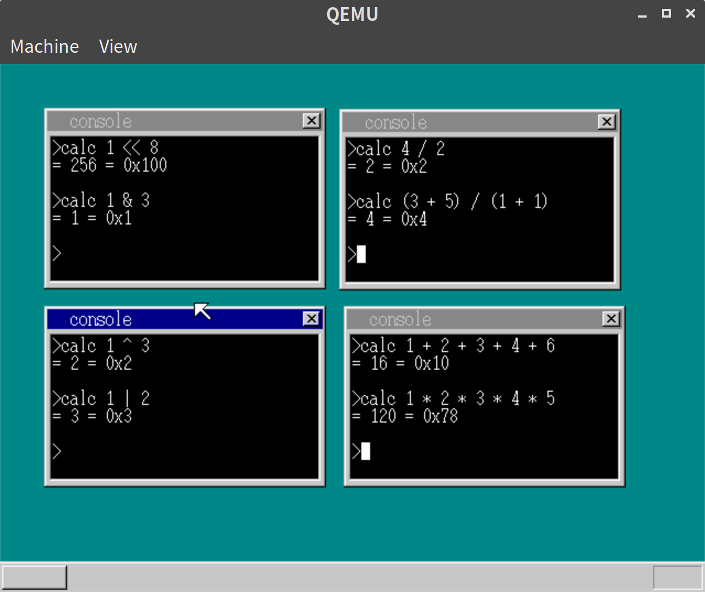
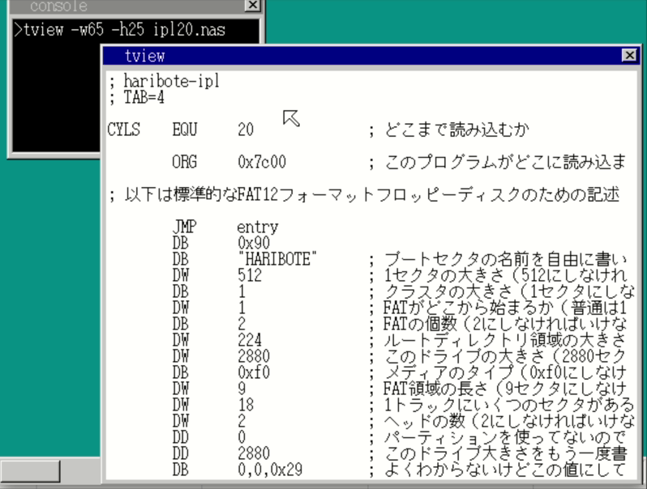
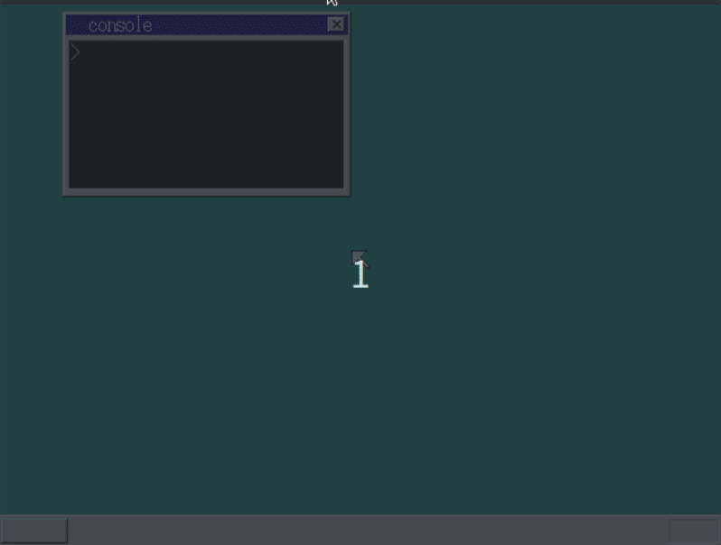
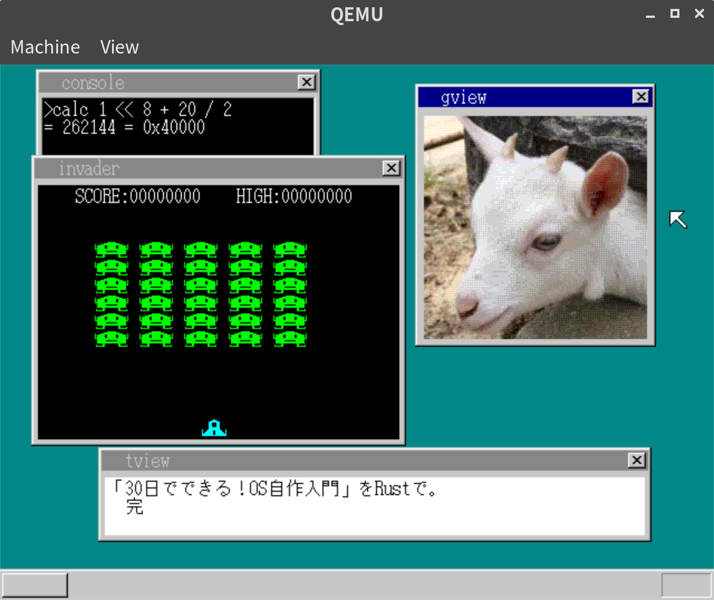

「30日でできる！OS自作入門」をRustで。30日目
「30日でできる！OS自作入門 」のC言語の部分をできるだけRustですすめてみる。今回で最後となる。
アプリケーションを作っていく。特にソースを載せてもあまり意味がなさそうなので、ソースは載せず、概要と実行結果だけにとどめる。
数値演算をする
簡単な数値演算プログラムを作る。
ソースはこちらを参照のこと。
本の内容と同様、パーズ結果の中間表現のようなものは挟まず、パーズした木の端にあたるところからそのまま評価していく形の実装となる。
実行結果

テキストビューワを作る
スクロールつきでテキストを表示できるビューワを作る。
ここで、コンソール以外のウィンドウでは日本語対応していないことに気づいたので、日本語対応部分をコンソール内から外に切り出した。(本のコードでは元々そうなっていた。)
実行結果

画像ビューワを作る
本では音楽再生のアプリも作っているが、QEMUだと音がならないため、とばして画像ビューワを作る。
ソースはこちらを参照のこと。
実行結果

30日目は以上となる。ここまでの内容のコードはyoshitsugu/hariboteos_in_rustのday30としてタグを打ってある。
感想など
ここまでで本の内容で実装したいものは実装できたので一旦終了とする。 折角なので、感想も書いておく。
自分はあまりOSなどいわゆる低レイヤーと呼ばれるような部分について詳しくなく、もう少し詳しくなりたい、という思いからこの本を読みはじめた。そういう意味では、かなり勉強になったと思う。今の最新のOSはそもそもブートがUEFIになっていたり、メモリ管理にはセグメンテーションではなくページングが必須になっていたり1とかなり違うようだが、エッセンスを学ぶにはよかったように思う。
また、勉強中のRustで書いたため、余計時間がかかった部分もあったが、デバッグ時のエラーメッセージや、所有権の仕組みによるメモリ汚染の防止など、Rustの洗練されている部分の恩恵もかなり受けられたのではないかと思う。
とはいえ、本のCのコードをそのまま翻訳したようなunsafeなコードばかり書いてしまったのでそこはもう少しやり方を変えてもよかったかもしれない。
最後に、3ヶ月近くかかってしまったが、楽しくすすめられたのでよかったと思う。
